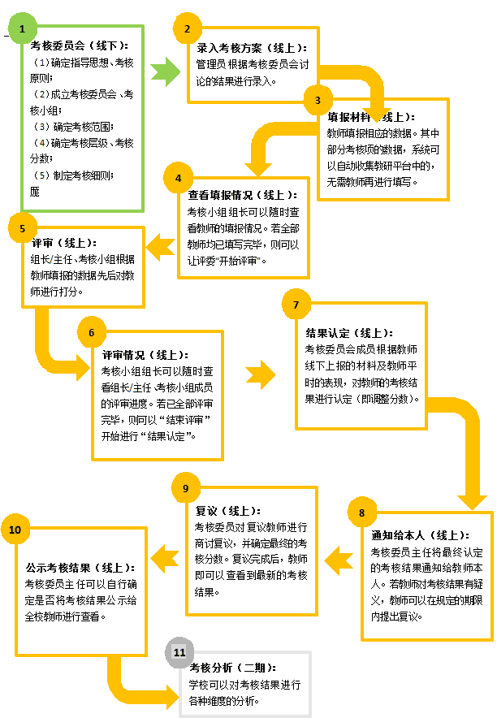

3.3.1 产品介绍
“学校常态管理与绩效考核系统” 是服务于学校常态教学管理和教师绩效考核的应用服务系统，从教师常态化工作的跟踪与管理、教师教研能力考核及教师教学成绩分析等方面出发，为学校管理提供一站式的应用服务。通过对教师德、能、勤、绩等多维度的考核，以实现学校管理与绩效考核规范化、合理化的目标。
其特点为：
（1）系统预置考核标准通用模板，使考核更规范、更精准、更便捷。系统预置的考核标准细分为一级指标、二级指标、考核要素、考核项，并且用户可以根据学校的需要自行调整，以适应个性化需求。
（2）核采点为教师全部工作项，使考核常态化、促进过程管理。教师只须做好常态工作，而不仅只是考核出勤、成绩、家长学生评教。
（3）平台内置数学建模公式（特有的），将常态化工作实绩量化生成基础分数，减轻材料分板整理繁琐和麻烦，尤其是通过比例参数的引入，使名次比较、进步率、优秀率更科学更公正。
（4）基础定量考核与定性等级评价相结合：基础分使繁杂数据得以量化，等级分对工作质量做定性评价。系统自动将各考核项量化为基础分，破解考核数据繁杂难以量化的难题。等级分：组长级、主任级、考核小组三级考核通过对教师实际情况的了解和把握，客观公正的进行等级评价，且直接管理者即为主要考核人，使管理与考核“一脉相承”，通过考核与管理双重手段，促进学校发展。
“绩效考核系统”的流程图如下图所示：
